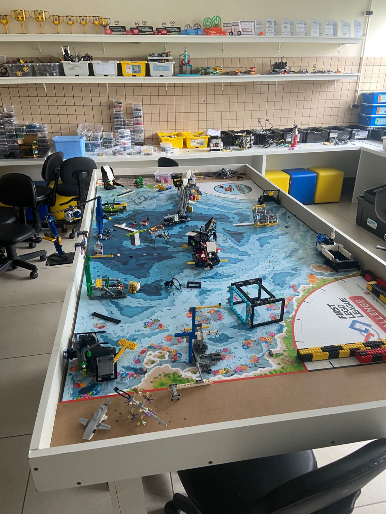

O bairro do Umbará, localizado em um dos pontos mais distantes da cidade de Curitiba, foi inicialmente uma colônia de imigrantes italianos formada no ano de 1887. Isolado devido à distância e ao acesso extremamente difícil por causa das estradas ruins e da lama, o bairro desenvolveu uma maneira própria de ser, agir e pensar, o que definiu seus moradores com uma identidade muito única e singular. Fundado em 1912, como uma escola paroquial das Irmãs do Sagrado Coração de Jesus, o Colégio Padre Cláudio Morelli passou a representar, através de sua cultura escolar, um local de formação e manutenção dessa identidade chamada Umbaraense. Uma instituição escolar reflete não apenas as leis, normas, teorias pedagógicas em vigor, mas também representa uma cultura escolar própria, diretamente relacionada ao ambiente em que está inserida e do qual faz parte.
Mídia
